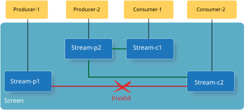
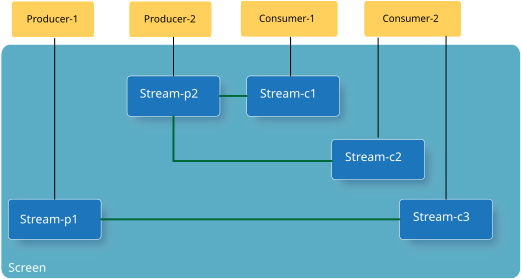

It can get complicated when there are multiple producers and consumers within a system.
It's important to understand the cardinality that's supported between the producer and consumer streams.
| Producer stream-to-Consumer stream cardinality | Supported? |
|---|---|
|
One-to-one
|
Yes |
|
One-to-many
|
Yes |
|
Many-to-one
|
No |
Essentially, a producer stream can be connected with multiple consumer streams, but a consumer stream can be connected to only one producer stream. Note that the cardinality relationship is restricted to individual streams, not to producer or consumer applications. Producer and consumer applications can create multiple streams each.
The following example illustrates how producer and consumer applications can use streams based on the supported cardinality.

In this example, Stream-p2 is connected to, and being consumed by Stream-c1 and Stream-c2. However, because Stream-c2 is already consuming from Stream-p2, it can't also consume from Stream-p1.
If a consumer requires content from multiple producers, then it must manage multiple consumer streams. For Consumer-2 in this example to consume Stream-p1 as well as Stream-p2, it must create two separate streams and connect one to Stream-p1, and one to Stream-p2.
